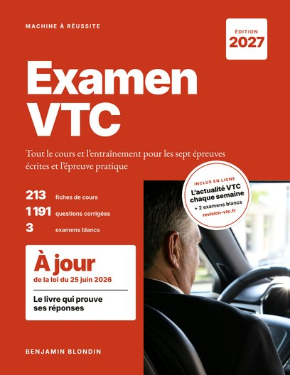

Le site du livre Machine à Réussite
Réussir l’examen VTC avec des règles à jour
Le livre a été vérifié en octobre 2026. Ici, il continue : l’actualité du métier chaque semaine, les règles qui changent, et deux examens blancs en ligne.
Bientôt disponible sur AmazonLire l’Actualité VTC

Les rubriques du site
Chaque semaine
Actualité VTC
Textes officiels, examen, plateformes, cotisations : ce qui change pour vous, toujours avec ses sources.
L'essentiel du droit
Textes du métier
Le droit du VTC article par article : le texte officiel, expliqué en clair avec un exemple.
Après l'impression
Mises à jour du livre
Chaque règle qui change, avec sa date, la fiche concernée et le texte qui la fonde.
Réservé aux lecteurs
Examens blancs n° 4 et 5
À l’écran, chronométrés et corrigés, ou à imprimer.
Réglementation VTC : l'essentiel
- Réservation préalable et maraude : ce qui est interdit
- Attente devant les gares et aéroports : une heure maximum
- Le retour à la base après une course
- La carte professionnelle VTC : conditions et délai
- L’examen VTC : épreuves, coefficients, notes éliminatoires
- Le registre des VTC
- Le véhicule VTC : âge, dimensions, puissance
- Le justificatif de réservation : les sept mentions
- Maraude, démarchage, conduite sans carte : les sanctions
Actualité VTC · n° 1 · 22 octobre 2026
Revenu horaire relevé jusqu’à fin novembre, précompte confirmé pour 2027
- Le revenu minimum garanti par heure d’activité passe de 30 à 32 € en octobre et novembre 2026. C’est une mesure temporaire.
- Le précompte des cotisations par les plateformes est obligatoire au 1er janvier 2027 pour toutes les plateformes, VTC comprises.
- Aucun nouveau texte sur les VTC au Journal officiel depuis août, et aucun changement des règles de l’examen.